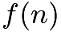
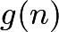
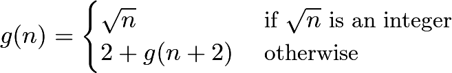
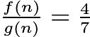

2021 AIME II Problems/Problem 15
Problem
Let

and
be functions satisfying![\[f(n) = \begin{cases}\sqrt{n} & \text{ if } \sqrt{n} \text{ is an integer}\\ 1 + f(n+1) & \text{ otherwise} \end{cases}\]](http://latex.artofproblemsolving.com/d/2/7/d27af3275e885b65d8cdb2caa1c2ef6bd46bd4a7.png) and
and

for positive integers . Find the least positive integer such that
. Find the least positive integer such that 
.Solution 1
Consider what happens when we try to calculate where n is not a square. If  for (positive) integer k, recursively calculating the value of the function gives us
for (positive) integer k, recursively calculating the value of the function gives us  . Note that this formula also returns the correct value when
. Note that this formula also returns the correct value when  , but not when
, but not when  . Thus
. Thus  for
for  .
.
If  , returns the same value as . This is because the recursion once again stops at
, returns the same value as . This is because the recursion once again stops at  . We seek a case in which
. We seek a case in which  , so obviously this is not what we want. We want
, so obviously this is not what we want. We want  to have a different parity, or
to have a different parity, or  have the same parity. When this is the case, instead returns
have the same parity. When this is the case, instead returns  .
.
Write  , which simplifies to
, which simplifies to  . Notice that we want the LHS expression to be divisible by 3; as a result,
. Notice that we want the LHS expression to be divisible by 3; as a result,  . We also want n to be strictly greater than
. We also want n to be strictly greater than  , so
, so  . The LHS expression is always even (since
. The LHS expression is always even (since  factors to
factors to  , and one of
, and one of  and
and  will be even), so to ensure that and share the same parity, should be even. Then the least that satisfies these requirements is
will be even), so to ensure that and share the same parity, should be even. Then the least that satisfies these requirements is  , giving
, giving  .
.
Indeed - if we check our answer, it works. Therefore, the answer is  .
.
-Ross Gao
Solution 2 (Four Variables)
We consider and separately:

We restrict
in which  for some positive integer
for some positive integer  or
or ![\[n=(k+1)^2-p\hspace{40mm}(1)\]](http://latex.artofproblemsolving.com/4/2/0/420b840958f3d5a1f822fe79c350233e0080f702.png) for some integer
for some integer  such that
such that  By recursion, we get
By recursion, we get


If
and have the same parity, then we get  by a similar process from
by a similar process from  This contradicts the precondition
This contradicts the precondition  Therefore, and must have different parities, from which and
Therefore, and must have different parities, from which and  must have the same parity.
must have the same parity. It follows that
 or
or ![\[n=(k+2)^2-2q\hspace{38.25mm}(3)\]](http://latex.artofproblemsolving.com/0/1/0/0107905060b42ff904cc04646b5d3f1c199021a6.png) for some integer
for some integer  such that
such that  By recursion, we get
By recursion, we get

- Answer
By
 and
and  we have
we have ![\[\frac{f(n)}{g(n)}=\frac{k+p+1}{k+2q+2}=\frac{4}{7}. \hspace{27mm}(5)\]](http://latex.artofproblemsolving.com/8/d/3/8d331da6dfcdd4c34a6de5dd4b3231a1ed44dc18.png) From
From  and
and  equating the expressions for gives
equating the expressions for gives  Solving for produces
Solving for produces ![\[k=\frac{2q-p-3}{2}. \hspace{41.25mm}(6)\]](http://latex.artofproblemsolving.com/3/1/d/31d93e6e4c54fe45c95930fd1d6afc9de84ad8bc.png) We substitute
We substitute  into
into  then simplify, cross-multiply, and rearrange:
then simplify, cross-multiply, and rearrange:
 Since
Since  we know that
we know that  must be divisible by
must be divisible by  and must be divisible by
and must be divisible by 
Recall that the restrictions on
and are  and
and  respectively. Substituting into either inequality gives
respectively. Substituting into either inequality gives  Combining all these results produces
Combining all these results produces ![\[0<p+1<q<2k+2. \hspace{28mm}(8)\]](http://latex.artofproblemsolving.com/2/3/9/23947a05895c13480699630b0264abdf0e687560.png) To minimize in either or we minimize so we minimize and in
To minimize in either or we minimize so we minimize and in  From and
From and  we construct the following table:
we construct the following table:
![\[\begin{array}{c|c|c|c} & & & \\ [-2.5ex] \boldsymbol{p} & \boldsymbol{q} & \boldsymbol{k} & \textbf{Satisfies }\boldsymbol{(8)?} \\ [0.5ex] \hline & & & \\ [-2ex] 11 & 11 & 4 & \\ 21 & 22 & 10 & \\ 31 & 33 & 16 & \checkmark \\ \geq41 & \geq44 & \geq22 & \checkmark \\ \end{array}\]](http://latex.artofproblemsolving.com/e/6/1/e610ad850cfdb97e80024778f16ec05f51421d1f.png) Finally, we have
Finally, we have  Substituting this result into either or
Substituting this result into either or  generates
generates 
- Remark
We can verify that
![\[\frac{f(258)}{g(258)}=\frac{1\cdot31+f(258+1\cdot31)}{2\cdot33+g(258+2\cdot33)}=\frac{31+\overbrace{f(289)}^{17}}{66+\underbrace{g(324)}_{18}}=\frac{48}{84}=\frac47.\]](http://latex.artofproblemsolving.com/3/7/8/378e781cf0c738da49c5410f1f8207cabe550e48.png)
~MRENTHUSIASM
Solution 3
Since isn't a perfect square, let  with
with  . If is odd, then
. If is odd, then  . If is even, then
. If is even, then
 from which
from which
 Since is even,
Since is even,  is even. Since
is even. Since  , the smallest is
, the smallest is  which produces the smallest :
which produces the smallest : ![\[k=2 \implies m=16 \implies n=16^2+2=\boxed{258}.\]](http://latex.artofproblemsolving.com/d/0/f/d0f7a6c320a1f8338cbec5ee40d95b65227f42ea.png) ~Afo
~Afo
Solution 4 (Quadratics With Two Variables)
To begin, note that if is a perfect square, , so  , so we must look at values of that are not perfect squares (what a surprise). First, let the distance between and the first perfect square greater than or equal to it be , making the values of
, so we must look at values of that are not perfect squares (what a surprise). First, let the distance between and the first perfect square greater than or equal to it be , making the values of  and
and  integers. Using this notation, we see that
integers. Using this notation, we see that  , giving us a formula for the numerator of our ratio. However, since the function of does not add one to the previous inputs in the function until a perfect square is achieved, but adds values of two, we can not achieve the value of
, giving us a formula for the numerator of our ratio. However, since the function of does not add one to the previous inputs in the function until a perfect square is achieved, but adds values of two, we can not achieve the value of  in unless is an even number. However, this is impossible, since if was an even number, , giving a ratio of one. Thus, must be an odd number.
in unless is an even number. However, this is impossible, since if was an even number, , giving a ratio of one. Thus, must be an odd number.
Thus, since must be an odd number, regardless of whether is even or odd, to get an integral value in , we must get to the next perfect square after  . To make matters easier, let
. To make matters easier, let  . Thus, in , we want to achieve
. Thus, in , we want to achieve  .
.
Expanding and substituting in the fact that  yields:
yields:
![\[(z+1)^2=z^2+2z+1=n+k+2\sqrt{n+k}+1\]](http://latex.artofproblemsolving.com/a/b/d/abdce9f346c3ae90e93935fc4b7d26c04479e6a2.png)
Thus, we must add the quantity  to to achieve a integral value in the function . Thus.
to to achieve a integral value in the function . Thus.
![\[g(n)=(k+2z+1)+\sqrt{n+k+2\sqrt{n+k}+1}\]](http://latex.artofproblemsolving.com/e/e/f/eeff6bf5d6dd2739ed1e9573f58dba1c87bbff89.png)
However, note that the quantity within the square root is just , and so:
![\[g(n)=k+3z+2\]](http://latex.artofproblemsolving.com/9/8/f/98f51193c8a10d7f63308fc1b5d7bffa274b66cf.png)
Thus,
![\[\frac{f(n)}{g(n)}=\frac{k+z}{k+3z+2}\]](http://latex.artofproblemsolving.com/9/d/9/9d9fd797785771956e93d1dff8c0d3b9e237b19b.png)
Since we want this quantity to equal  , we can set the above equation equal to this number and collect all the variables to one side to achieve
, we can set the above equation equal to this number and collect all the variables to one side to achieve
![\[3k-5z=8\]](http://latex.artofproblemsolving.com/2/1/b/21b29b23e9e70ee50fa73386ff9ab95da906bca5.png)
Substituting back in that , and then separating variables and squaring yields that
![\[9k^2-73k+64=25n\]](http://latex.artofproblemsolving.com/9/2/4/9242758db76d5dfa6faf8282d7e091811c226ee8.png)
Now, if we treat as a constant, we can use the quadratic formula in respect to to get an equation for in terms of (without all the squares). Doing so yields
![\[\frac{73\pm\sqrt{3025+900n}}{18}=k\]](http://latex.artofproblemsolving.com/7/b/6/7b6be7467deaf62d1b9a934609d9a67b6b631d53.png)
Now, since and are integers, we want the quantity within the square root to be a perfect square. Note that  . Thus, assume that the quantity within the root is equal to the perfect square,
. Thus, assume that the quantity within the root is equal to the perfect square,  . Thus, after using a difference of squares, we have
. Thus, after using a difference of squares, we have
![\[(m-55)(m+55)=900n\]](http://latex.artofproblemsolving.com/1/1/7/117fc218ffcb9e4c5dae4316d3709711f8257d90.png) Since we want to be an integer, we know that the
Since we want to be an integer, we know that the  should be divisible by five, so, let's assume that we should have divisible by five. If so, the quantity
should be divisible by five, so, let's assume that we should have divisible by five. If so, the quantity  must be divisible by five, meaning that leaves a remainder of one when divided by 5 (if the reader knows LaTeX well enough to write this as a modulo argument, please go ahead and do so!).
must be divisible by five, meaning that leaves a remainder of one when divided by 5 (if the reader knows LaTeX well enough to write this as a modulo argument, please go ahead and do so!).
Thus, we see that to achieve integers and that could potentially satisfy the problem statement, we must try the values of congruent to one modulo five. However, if we recall a statement made earlier in the solution, we see that we can skip all even values of produced by this modulo argument.
Also, note that  won't work, as they are too small, and will give an erroneous value for . After trying
won't work, as they are too small, and will give an erroneous value for . After trying  , we see that
, we see that  will give a value of
will give a value of  , which yields
, which yields  , which, if plugged in to for our equations of and , will yield the desired ratio, and we're done.
, which, if plugged in to for our equations of and , will yield the desired ratio, and we're done.
Side Note: If any part of this solution is not rigorous, or too vague, please label it in the margin with "needs proof". If you can prove it, please add a lemma to the solution doing so :)
-Azeem H. (mathislife52)
Solution 5 (Basic Substitutions)
First of all, if is a perfect square,  and their quotient is
and their quotient is  So, for the rest of this solution, assume is not a perfect square.
So, for the rest of this solution, assume is not a perfect square.
Let  be the smallest perfect square greater than and let
be the smallest perfect square greater than and let  be the smallest perfect square greater than with the same parity as
be the smallest perfect square greater than with the same parity as  and note that either
and note that either  or
or  Notice that
Notice that 
With a bit of inspection, it becomes clear that  and
and 
If  and have the same parity, we get
and have the same parity, we get  so
so  and their quotient is So, for the rest of this solution, we let and have opposite parity. We have two cases to consider.
and their quotient is So, for the rest of this solution, we let and have opposite parity. We have two cases to consider.
Case 1: is odd and is even
Here, we get  for some positive integer
for some positive integer  Then,
Then,  We let
We let  for some positive integer so
for some positive integer so  and
and 
We set  cross multiply, and rearrange to get
cross multiply, and rearrange to get  Since and are integers, the LHS will always be even and the RHS will always be odd, and thus, this case yields no solutions.
Since and are integers, the LHS will always be even and the RHS will always be odd, and thus, this case yields no solutions.
Case 2: is even and is odd
Here, we get  for some positive ineger Then,
for some positive ineger Then,  We let for some positive integer so
We let for some positive integer so  and
and 
We set  cross multiply, and rearrange to get
cross multiply, and rearrange to get  or
or  Since and are integers, must be a multiple of
Since and are integers, must be a multiple of  Some possible solutions for
Some possible solutions for  with the least and are
with the least and are  and
and 
We wish to minimize since  One thing to keep in mind is the initial assumption
One thing to keep in mind is the initial assumption
The pair  gives
gives  and
and  But
But  is clearly false, so we discard this case.
is clearly false, so we discard this case.
The pair  gives
gives  and
and  which is a perfect square and therefore can be discarded.
which is a perfect square and therefore can be discarded.
The pair  gives
gives  and
and  which is between
which is between  and
and  so it is our smallest solution.
so it is our smallest solution.
So, is the correct answer.
~mc21s
Solution 6 (Short)
Say the answer is in the form  , then
, then  must be odd or else
must be odd or else  . Say
. Say  .
.  ,
,  . Because
. Because  =
=  *(an integer)/
*(an integer)/ *(an integer),
*(an integer),  is *(an integer) so must be odd or else would be odd. Solving for in terms of gives integer
is *(an integer) so must be odd or else would be odd. Solving for in terms of gives integer  which means is mod
which means is mod  , because is also odd, is
, because is also odd, is  mod
mod  . must be less than
. must be less than  or else the minimum square above
or else the minimum square above  would be
would be  . We set an inequality
. We set an inequality
 .
Since is mod ,
.
Since is mod ,  and
and  giving
giving  = .
= .
~mathophobia
~ added by Bread10
added by Bread10
Solution 7
Define a nonnegative integer such that  = . Since
= . Since  is a positive integer. Now, suppose 3 consecutive integers
is a positive integer. Now, suppose 3 consecutive integers  , , and
, , and  , and
, and  . When
. When  , must have a different parity than , so that 's recursive sequence ends on , while continues to
, must have a different parity than , so that 's recursive sequence ends on , while continues to  . If this condition is satisfied, we can figure out the value of based on . According to the definitions of and ,
. If this condition is satisfied, we can figure out the value of based on . According to the definitions of and ,  and
and  which gives
which gives  . And because of
. And because of  ,
,  so cross multiplying gives
so cross multiplying gives  . This means that
. This means that  is divisible by 3, and thus
is divisible by 3, and thus  . The final thing left is to find the smallest such that the corresponding value of exist. Simple guess and check should give that the smallest value of is
. The final thing left is to find the smallest such that the corresponding value of exist. Simple guess and check should give that the smallest value of is  , which yields an answer of
, which yields an answer of  .
.
~ Marchk26
Solution 8 (Fast)
Let  , where
, where  . This means that
. This means that  .
For
.
For  , note that must be odd, otherwise . This means that must 'skip' one perfect square (being ), and go to . This will take
, note that must be odd, otherwise . This means that must 'skip' one perfect square (being ), and go to . This will take  . We have
. We have  . Cross multiplying and simplifying we get
. Cross multiplying and simplifying we get  . Taking
. Taking  we have
we have  or
or  . Note that the inequality when
. Note that the inequality when  and
and  . Trying out
. Trying out  , we get
, we get  which doesn't work as x is even. Trying out
which doesn't work as x is even. Trying out  , we get
, we get  and
and  , which satisfies all conditions, meaning the answer is
, which satisfies all conditions, meaning the answer is 
~E___
Video Solution
~Mathematical Dexterity
Video Solution by Interstigation
~Interstigation
See Also
| 2021 AIME II (Problems • Answer Key • Resources) | ||
| Preceded by Problem 14 |
Followed by This is the last question | |
| 1 • 2 • 3 • 4 • 5 • 6 • 7 • 8 • 9 • 10 • 11 • 12 • 13 • 14 • 15 | ||
| All AIME Problems and Solutions | ||

These problems are copyrighted © by the Mathematical Association of America.